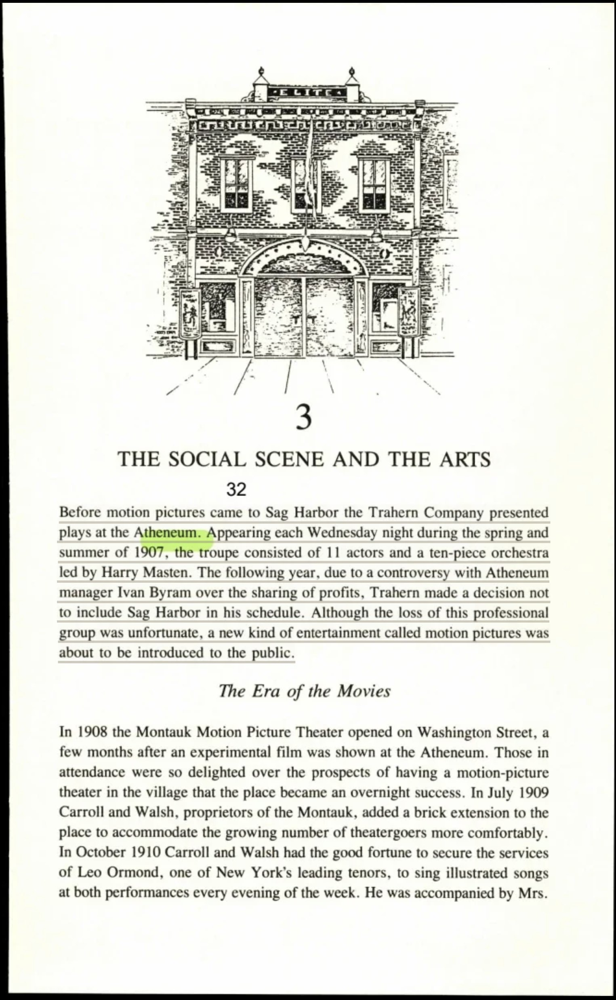
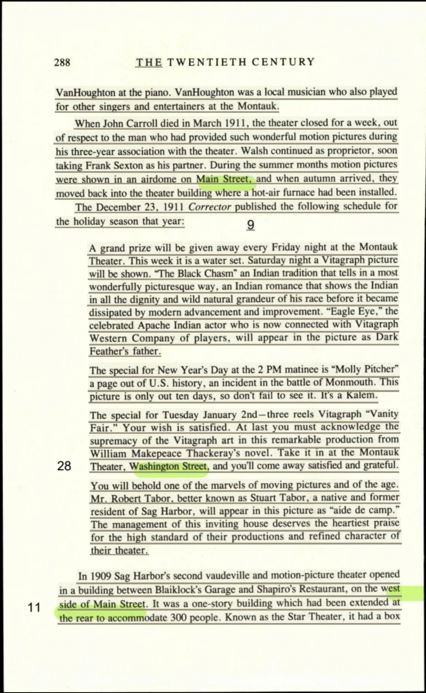
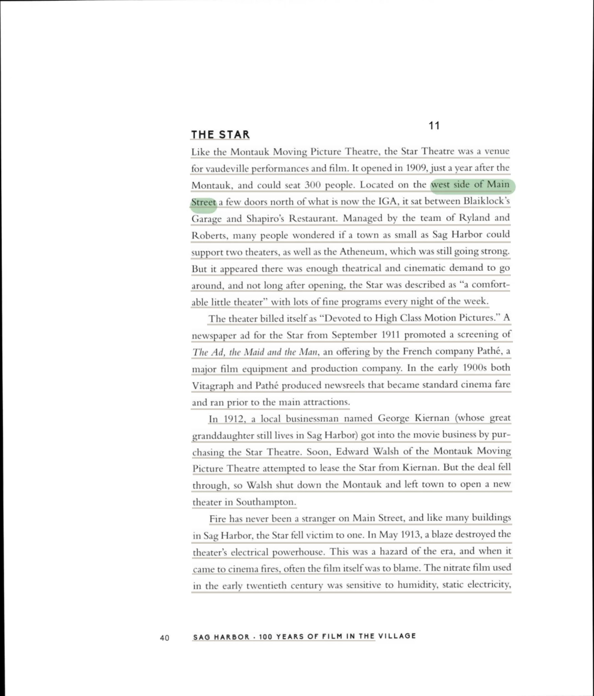
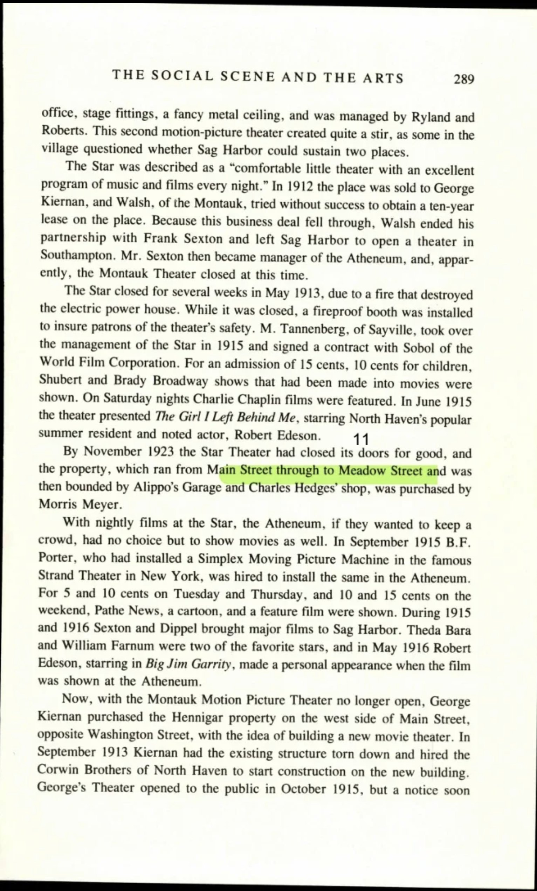
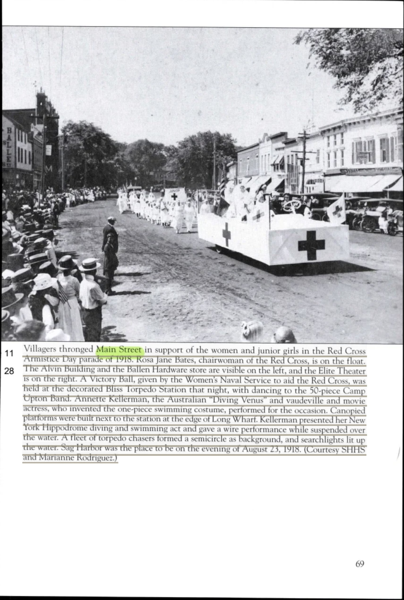
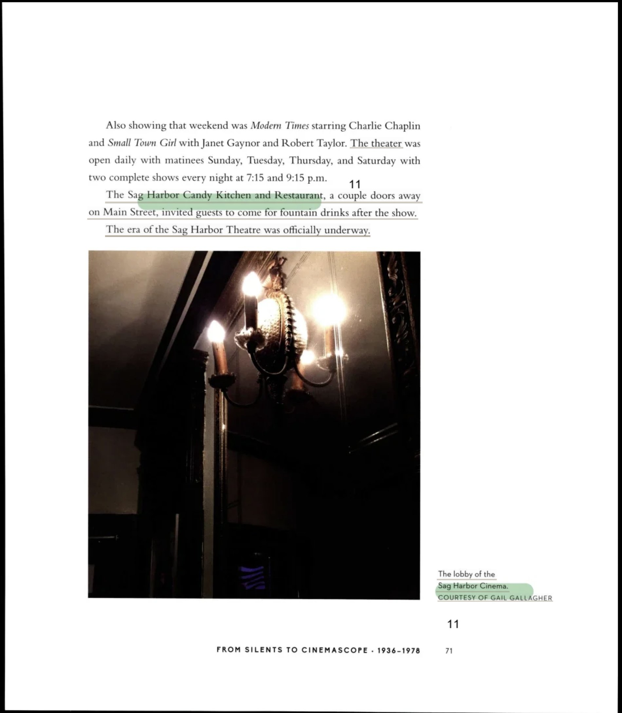
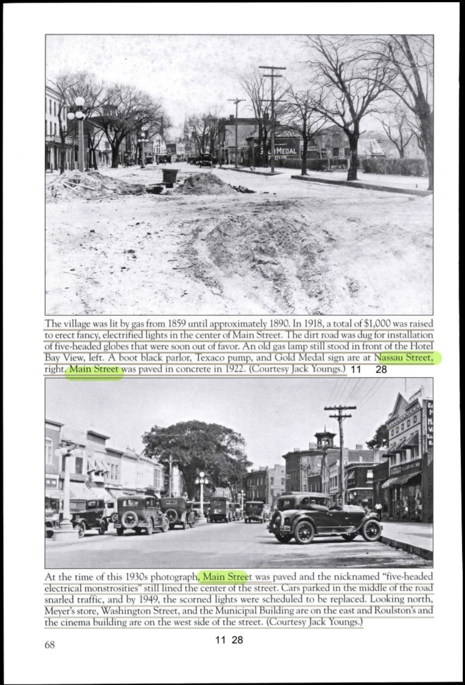
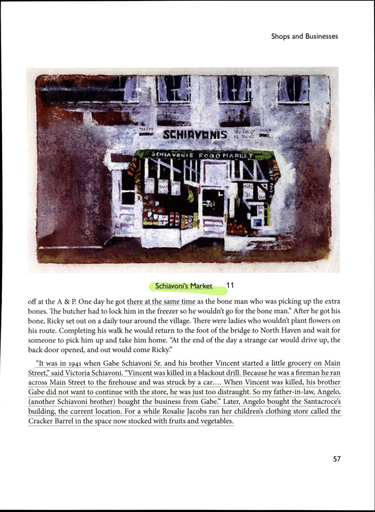
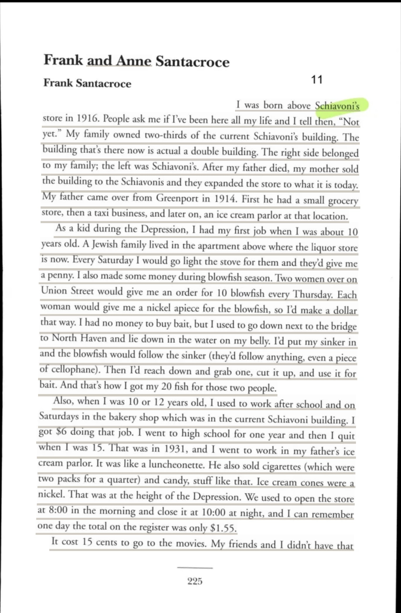

From the Montauk and the Star to the theatre of 1936
Every previously italicized phrase is highlighted and colour-coded by source. Where the source page is on file, clicking the highlight opens the scan.
In the opening years of the twentieth century, Sag Harbor—a village whose commercial identity had long been tethered to the sea—found itself seduced by an altogether modern enchantment. The theatrical and cinematic awakening of the village began quietly but decisively: In 1908 the Montauk Motion Picture Theater opened on Washington Street, a few months after an experimental film was shown at the Atheneum. The novelty of the medium proved irresistible to a populace hungry for diversion, and the response was immediate and rapturous, for Those in attendance were so delighted over the prospects of having a motion-picture theater in the village that the place became an overnight success.
Success, as it so often does, demanded expansion. The proprietors moved swiftly to meet the swelling appetite of their audience, and In July 1909 Carroll and Walsh, proprietors of the Montauk, added a brick extension to the place to accommodate the growing number of theatergoers more comfortably. In an era before synchronized sound, the theater supplemented its silent reels with live musical embellishment of surprising refinement, securing a genuine metropolitan talent when In October 1910 Carroll and Walsh had the good fortune to secure the services of Leo Ormond, one of New York's leading tenors, to sing illustrated songs at both performances every evening of the week. His artistry was anchored by a familiar local accompanist, for He was accompanied by Mrs. VanHoughton at the piano. VanHoughton was a local musician who also played for other singers and entertainers at the Montauk.
The intimate scale of village enterprise meant that the theater was inseparable from the men who ran it, and when tragedy visited, the community observed it with solemn ceremony. When John Carroll died in March 1911, the theater closed for a week, out of respect to the man who had provided such wonderful motion pictures during his three-year association with the theater. The surviving partner carried the enterprise forward and found new collaboration, for Walsh continued as proprietor, soon taking Frank Sexton as his partner. The seasonal cadence of the business reflected both the climate and the ingenuity of its operators: During the summer months motion pictures were shown in an airdome on Main Street, and when autumn arrived, they moved back into the theater building where a hot-air furnace had been installed.
The flavor of the Montauk's programming is preserved with remarkable vividness in the holiday bill of fare announced in the local press. Patrons were enticed with incentive and spectacle alike, beginning with the promise that A grand prize will be given away every Friday night at the Montauk Theater. This week it is a water set. The dramatic offerings aspired to grandeur and pretended to ethnographic gravity, as in the Saturday feature: Saturday night a Vitagraph picture will be shown. 'The Black Chasm' an Indian tradition that tells in a most wonderfully picturesque way, an Indian romance that shows the Indian in all the dignity and wild natural grandeur of his race before it became dissipated by modern advancement and improvement. The production boasted a star of genuine novelty, for 'Eagle Eye,' the celebrated Apache Indian actor who is now connected with Vitagraph Western Company of players, will appear in the picture as Dark Feather's father.
The holiday slate drew liberally upon patriotic history and literary prestige. For the new year there came a historical tableau, advertised with characteristic urgency: The special for New Year's Day at the 2 PM matinee is 'Molly Pitcher' a page out of U.S. history, an incident in the battle of Monmouth. This picture is only out ten days, so don't fail to see it. It's a Kalem. Loftier still was the subsequent attraction, a literary adaptation trumpeted with almost evangelical conviction: The special for Tuesday January 2nd—three reels Vitagraph 'Vanity Fair.' Your wish is satisfied. At last you must acknowledge the supremacy of the Vitagraph art in this remarkable production from William Makepeace Thackeray's novel. The advertisement pressed its appeal to the fullest, promising that patrons should Take it in at the Montauk Theater, Washington Street, and you'll come away satisfied and grateful. You will behold one of the marvels of moving pictures and of the age. A local connection lent the production a parochial pride, for Mr. Robert Tabor, better known as Stuart Tabor, a native and former resident of Sag Harbor, will appear in this picture as 'aide de camp'. The notice concluded with a flourish of self-congratulation, declaring that The management of this inviting house deserves the heartiest praise for the high standard of their productions and refined character of their theater.
The commercial logic of a village so modest could scarcely be presumed to sustain two cinematic houses, yet competition arrived nonetheless. In 1909 Sag Harbor's second vaudeville and motion-picture theater opened in a building between Blaiklock's Garage and Shapiro's Restaurant, on the west side of Main Street. Its physical dimensions were unassuming but serviceable, for It was a one-story building which had been extended at the rear to accommodate 300 people, and the establishment took a name that would endure in local memory, Known as the Star Theater, it had a box Roberts. Much as the Star of today sits a short distance from the modern grocery, the chronicler of a later generation situated it precisely: it opened in 1909, just a year after the Montauk, and could seat 300 people, and was Located on the west side of Main Street a few doors north of what is now the IGA, it sat between Blaiklock's Garage and Shapiro's Restaurant.
The arrival of this competitor provoked genuine civic debate, for This second motion-picture theater created quite a stir, as some in the village questioned whether Sag Harbor could sustain two places. Yet the Star proved its worth, earning a reputation as a comfortable little theater with an excellent program of music and films every night. It was overseen by a pair of managers, being Managed by the team of Ryland and Roberts, and the apprehensions of the skeptics were quieted, for the chronicler observed that But it appeared there was enough theatrical and cinematic demand to go around, and not long after opening, the Star was described as 'a comfort- able little theater' with lots of fine programs every night of the week. The house proclaimed its artistic ambitions boldly, billing itself as 'Devoted to High Class Motion Pictures', and it drew upon the fare of the great European studios: A newspaper ad for the Star from September 1911 promoted a screening of The Ad, the Maid and the Man, an offering by the French company Pathe, a major film equipment and production company. Such programming reflected a universal convention of the medium, for In the early 1900s both Vitagraph and Pathé produced newsreels that became standard cinema fare and ran prior to the main attractions.
A local man of enterprise now entered the cinematic trade, for In 1912, a local businessman named George Kiernan (whose great granddaughter still lives in Sag Harbor) got into the movie business by purchasing the Star Theatre. His acquisition precipitated a consequential rearrangement of the village's theatrical landscape, as a rival proprietor sought to consolidate his holdings: Soon, Edward Walsh of the Montauk Moving Picture Theatre attempted to lease the Star from Kiernan. This maneuver, mirrored in the first chronicle's account that In 1912 the place was sold to George Kiernan, and Walsh, of the Montauk, tried without success to obtain a ten-year lease on the place, came to naught, with lasting consequences: But the deal fell through, so Walsh shut down the Montauk and left town to open a new theater in Southampton. The dissolution rippled through the village's institutions, for Because this business deal fell through, Walsh ended his partnership with Frank Sexton and left Sag Harbor to open a theater in Southampton, and consequently Mr. Sexton then became manager of the Atheneum, and, apparently, the Montauk Theater closed at this time.
The great hazard of early cinema—the volatile celluloid itself—soon left its mark upon the Star. As the chronicler reflected, Fire has never been a stranger on Main Street, and like many buildings in Sag Harbor, the Star fell victim to one. The specific calamity is recorded on both accounts: In May 1913, a blaze destroyed the theater's electrical powerhouse, or, as the earlier narrative has it, the Star closed for several weeks in May 1913, due toa fire that destroyed the electric power house. The underlying danger was intrinsic to the technology, for This was a hazard of the era, and when it came to cinema fires, often the film itself was to blame. The physical chemistry of the medium rendered it perilous, as The nitrate film used in the early twentieth century was sensitive to humidity, static electricity, friction, light, and heat—all things that it would encounter during its journey through an electric projector and past a hot lamp.
The men who labored in the projection booth faced a danger commensurate with the medium's growing ambition, for Projection booths were notoriously hazardous places to work. As movies increased in length, so did the risk. The mechanics of exhibition compounded the peril: Longer films required the use of two projectors, and projectionists would jump from one machine to the other in order to ensure the next reel was ready to go when the time came. The consequences could be dire, as Film did catch fire quite easily, sometimes with disastrous consequences, as portrayed in the 1988 feature, Cinema Paradiso. Fortunately, the Star's misfortune proved comparatively mild, for But the Star's fire was not quite as serious as that, and the theater was closed for just a few weeks due to the blaze. Safety measures followed in the fire's wake, and While it was closed, a fireproof booth was installed to insure patrons of the theater's safety; yet this precaution extended only so far, for When it reopened, it had a new fireproof booth to protect audience members. The projectionists, however, were still on their own.
A new manager assumed command and brought with him the fruits of the Broadway stage, for M. Tannenberg, of Sayville, took over the management of the Star in 1915 and signed a contract with Sobol of the World Film Corporation, an arrangement elsewhere described in which In 1915, M. Tanneberg took over management of the Star from Kiernan, and he put in place a contract with World Film Corporation, which included the theatrical interests of the Shuberts and William A. Brady, both Broadway producers. The programming grew correspondingly sophisticated and remained affordable, for For an admission of 15 cents, 10 cents for children, Shubert and Brady Broadway shows that had been made into movies were shown, and As a result, the cinema began showing Broadway plays that had been made into films at the reasonable price of 15 cents (10 cents for children). Comedy and local celebrity alike found their place on the bill, for On Saturday nights Charlie Chaplin films were featured, and In June 1915 the theater presented The Girl I Left Behind Me, starring North Haven's popular summer resident and noted actor, Robert Edeson, a moment of hometown pride recounted anew in the observation that On Saturday nights Charlie Chaplin films were featured, and in June 1915 another local appeared on-screen in Sag Harbor— Robert Edeson who starred in Fox Film Corporation's The Girl I Left Behind Me.
The Star's career drew at last to its close, for By November 1923 the Star Theater had closed its doors for good, and the property, which ran from Main Street through to Meadow Street and was then bounded by Alippo's Garage and Charles Hedges' shop, was purchased by Morris Meyer. The second chronicler records the same conclusion, that Finally in November 1923, the Star ceased operation and Kiernan sold the building to a man named Morris Meyer. Yet the theatrical ambitions of its owner were not thereby extinguished, for—as the historian tantalizingly suggests—But George Kiernan wasn't quite done with the movies yet.
Competition compelled even the village's venerable cultural hall to embrace the moving image, for With nightly films at the Star, the Atheneum, if they wanted to keep a crowd, had no choice but to show movies as well. The institution outfitted itself with the finest available apparatus, and In September 1915 B.F. Porter, who had installed a Simplex Moving Picture Machine in the famous Strand Theater in New York, was hired to install the same in the Atheneum. Its programming followed the established conventions of the medium at modest cost, so that For 5 and 10 cents on Tuesday and Thursday, and 10 and 15 cents on the weekend, Pathe News, a cartoon, and a feature film were shown. A pair of impresarios elevated the Atheneum's offerings, for During 1915 and 1916 Sexton and Dippel brought major films to Sag Harbor, and the village savored both marquee names and personal appearances, since Theda Bara and William Farnum were two of the favorite stars, and in May 1916 Robert Edeson, starring in Big Jim Garrity, made a personal appearance when the film was shown at the Atheneum.
With the Montauk extinguished, Kiernan turned to the construction of an entirely new house upon the site that the modern cinema still occupies, for Now, with the Montauk Motion Picture Theater no longer open, George Kiernan purchased the Hennigar property on the west side of Main Street, opposite Washington Street, with the idea of building a new movie theater. The work of construction was duly commissioned, and In September 1913 Kiernan had the existing structure torn down and hired the Corwin Brothers of North Haven to start construction on the new building. The new enterprise opened amid controversy that illuminates the moral temper of the village, for George's Theater opened to the public in October 1915, but a notice soon appeared that all law abiding people should decline from patronizing the place, due to the fact that George had defied Ordinance #15 issued by the village trustees and kept his theater open on Sunday! A serious offense in some eyes.
A new steward soon modernized the establishment, as In 1917 management of George's Theater was taken over by Dr. G.C. McKay, who had new machinery installed, providing better quality entertainment than had been offered in the past. The house embraced the full spectacle of vaudeville, for Five refined vaudeville acts with new music, songs and dancing, opened at George's, along with America's greatest comedy trio, Charles F. Van, Aurelia Clark, and James M. Cole, in the musical comedy, 'The New King of Tramps,' accompanied by Cole's Red Hussar Concert Band and Orchestra.
A change of ownership brought with it a change of name, for Marshall Seaton bought the theater in 1919 and re-opened the place in October of that year with a new name, The Elite. This theater, visible on Main Street in the civic processions of the era, stood where photographs record that The Alvin Building and the Ballen Hardware store are visible on the left, and the Elite Theater is on the right. The new house cultivated the goodwill of families, and On its first anniversary, The Elite, in collaboration with Mashashimuet Park, showed pictures suitable for children every Friday night, and in October 1920 a full week of special films were shown.
Management passed once more with the departure of its proprietor, for After the retirement of Marshall Seaton in January 1924, the contract and management of The Elite passed to Samuel Rosenthal. The new manager lavished attention upon the theater's interior, as That same winter Rosenthal made improvements by redecorating the interior, moving the ticket office to the center of the rotunda, and adding three new chandeliers, and he rendered the space adaptable to multiple civic uses, for In August the front row of seats were removed and the floor leveled so the place could also be used as a basketball court and dance floor. Yet another proprietor and name followed, since By 1927 The Elite had been taken over by Mike Glynn, and at that time the name of the place changed to Glynn's Sag Harbor Theater, and he too modernized the apparatus, for A new more powerful projector was installed, and Donald Fairservis of Patchogue became manager.
The defining technological revolution of the age now reached the village, for Two years later a major development took place when the theater signed up for a sound and talking picture, the first in the history of Sag Harbor's theaters. The precise moment of this transformation is preserved: Kitty, a film taken from a novel by Warwick Deeping, was shown on October 13, 1929. The pursuit of acoustic perfection soon required a further pause in operations, for In September 1930 the Sag Harbor Theater closed for six weeks while a late model RCA Sound apparatus was installed, which provided theatergoers with a 'perfect presentation and finest sound and talking pictures'.
The decade's end brought the construction of the handsome building that remains the village's cinematic landmark, for In 1936 Sag Harbor had a fine new $25,000 movie theater. The old structure yielded to the new upon its original footprint, as Workmen began demolishing the main auditorium in order to erect a modern fireproof building of steel and concrete on the same site. The commission fell to a distinguished architect, for the design was the work of a metropolitan master, and Designed by John Eberson of New York City, the 600-seat theater became an elegant place of entertainment for the area residents. The renovation reconfigured the structure both inside and out, so that A new lobby eliminating the existing stairs, new restrooms, the facade transformed into a concave arc, and a box office in the center of the lobby were just some of the changes made.
The ornamentation of the new house drew upon the most eminent decorative talent of the day, for The decorating was done by Kenny Studios and Rambush Decorating Company of New York, decorators of the Roxy Theater in New York City. The construction itself relied upon the skilled trades of the surrounding towns, since Local contractors involved were S.J. Lynch & Sons of East Hampton, masons; I.H. Fordham of Sag Harbor, electrician; and Frank Johnson of East Hampton, building contractor. The theater was unveiled with ceremony and at familiar prices, for The new theater had its grand opening on June 3, 1936 and charged the same admission prices as the old movie house; evening rates were 20 cents for children and 40 cents for adults, and matinee prices 15 cents for children and 30 cents for adults. Its endurance across the generations is affirmed in the chronicler's reflection that Sag Harbor's present theater still occupies the site on which these early theaters stood, and its name and exterior have changed little since its building in 1936. A companion account records that the inaugural festivities ushered in a new epoch, observing that The Sag Harbor Candy Kitchen and Restaurant, a couple doors away on Main Street, invited guests to come for fountain drinks after the show, and that with this, The era of the Sag Harbor Theatre was officially underway.
In the broader texture of village life, the cinema and its site remained a fixed point of reference. Photographic surveys of the thoroughfare locate it firmly among its neighbors, for Looking north, Meyer's store, Washington Street, and the Municipal Building are on the east and Roulston's and the cinema building are on the west side of the street. The institution figured in the practical advertisements of local commerce, as when the public was exhorted that For Safety's Sake, Park Your Car in the Bay View Garage While Shopping or Attending the Movies. Reasonable Prices. And in the recollections of those who grew up in the village during the lean years of the Depression, the theater occupied a place of mingled longing and mischief, for one resident remembered that It cost 15 cents to go to the movies. My friends and I didn't have that much, so three of us would get together and each put in a nickel. One guy would buy a ticket and go in, and then as soon as they put the lights out and start the movie, he'd go to the exit door out in back and let the other two kids in. The building's own documented origin is recorded with laconic simplicity in the municipal record, which notes only that it Was built in 1940.
Every highlighted quote, in order of appearance, correlated to its underlying source. The swatch matches the highlight colour in the text.
| # | Verbatim Quote (abbreviated) | Source (Author, Title, Year, Page) |
|---|---|---|
| 1 | “In 1908 the Montauk Motion Picture Theater opened on Washington Street, a few months after an experimental film was shown at the Atheneum” | Zaykowski, Sag Harbor: The Story of an American Beauty, 1991, p. 287 [page scan] |
| 2 | “Those in attendance were so delighted over the prospects of having a motion-picture theater in the village that the place became an overnight success” | Zaykowski, Sag Harbor: The Story of an American Beauty, 1991, p. 287 [page scan] |
| 3 | “In July 1909 Carroll and Walsh, proprietors of the Montauk, added a brick extension to the place to accommodate the growing number of theatergoers more comfo…” | Zaykowski, Sag Harbor: The Story of an American Beauty, 1991, p. 287 [page scan] |
| 4 | “In October 1910 Carroll and Walsh had the good fortune to secure the services of Leo Ormond, one of New York's leading tenors, to sing illustrated songs at b…” | Zaykowski, Sag Harbor: The Story of an American Beauty, 1991, p. 287 [page scan] |
| 5 | “He was accompanied by Mrs. VanHoughton at the piano. VanHoughton was a local musician who also played for other singers and entertainers at the Montauk” | Zaykowski, Sag Harbor: The Story of an American Beauty, 1991, p. 288 [page scan] |
| # | Verbatim Quote (abbreviated) | Source (Author, Title, Year, Page) |
|---|---|---|
| 6 | “When John Carroll died in March 1911, the theater closed for a week, out of respect to the man who had provided such wonderful motion pictures during his thr…” | Zaykowski, Sag Harbor: The Story of an American Beauty, 1991, p. 288 [page scan] |
| 7 | “Walsh continued as proprietor, soon taking Frank Sexton as his partner” | Zaykowski, Sag Harbor: The Story of an American Beauty, 1991, p. 288 [page scan] |
| 8 | “During the summer months motion pictures were shown in an airdome on Main Street, and when autumn arrived, they moved back into the theater building where a …” | Zaykowski, Sag Harbor: The Story of an American Beauty, 1991, p. 288 [page scan] |
| 9 | “A grand prize will be given away every Friday night at the Montauk Theater. This week it is a water set” | Zaykowski, Sag Harbor: The Story of an American Beauty, 1991, p. 288 [page scan] |
| 10 | “Saturday night a Vitagraph picture will be shown. 'The Black Chasm' an Indian tradition that tells in a most wonderfully picturesque way, an Indian romance t…” | Zaykowski, Sag Harbor: The Story of an American Beauty, 1991, p. 288 [page scan] |
| 11 | “'Eagle Eye,' the celebrated Apache Indian actor who is now connected with Vitagraph Western Company of players, will appear in the picture as Dark Feather's …” | Zaykowski, Sag Harbor: The Story of an American Beauty, 1991, p. 288 [page scan] |
| 12 | “The special for New Year's Day at the 2 PM matinee is 'Molly Pitcher' a page out of U.S. history, an incident in the battle of Monmouth. This picture is only…” | Zaykowski, Sag Harbor: The Story of an American Beauty, 1991, p. 288 [page scan] |
| 13 | “The special for Tuesday January 2nd—three reels Vitagraph 'Vanity Fair.' Your wish is satisfied. At last you must acknowledge the supremacy of the Vitagraph …” | Zaykowski, Sag Harbor: The Story of an American Beauty, 1991, p. 288 [page scan] |
| 14 | “Take it in at the Montauk Theater, Washington Street, and you'll come away satisfied and grateful. You will behold one of the marvels of moving pictures and …” | Zaykowski, Sag Harbor: The Story of an American Beauty, 1991, p. 288 [page scan] |
| 15 | “Mr. Robert Tabor, better known as Stuart Tabor, a native and former resident of Sag Harbor, will appear in this picture as 'aide de camp'” | Zaykowski, Sag Harbor: The Story of an American Beauty, 1991, p. 288 [page scan] |
| 16 | “The management of this inviting house deserves the heartiest praise for the high standard of their productions and refined character of their theater” | Zaykowski, Sag Harbor: The Story of an American Beauty, 1991, p. 288 [page scan] |
| # | Verbatim Quote (abbreviated) | Source (Author, Title, Year, Page) |
|---|---|---|
| 17 | “In 1909 Sag Harbor's second vaudeville and motion-picture theater opened in a building between Blaiklock's Garage and Shapiro's Restaurant, on the west side …” | Zaykowski, Sag Harbor: The Story of an American Beauty, 1991, p. 288 [page scan] |
| 18 | “It was a one-story building which had been extended at the rear to accommodate 300 people” | Zaykowski, Sag Harbor: The Story of an American Beauty, 1991, p. 288 [page scan] |
| 19 | “Known as the Star Theater, it had a box Roberts” | Zaykowski, Sag Harbor: The Story of an American Beauty, 1991, p. 288 [page scan] |
| 20 | “opened in 1909, just a year after the Montauk, and could seat 300 people” | Hinkle, Sag Harbor: 100 Years of Film in the Village, 2017, p. 40 [page scan] |
| 21 | “Located on the west side of Main Street a few doors north of what is now the IGA, it sat between Blaiklock's Garage and Shapiro's Restaurant” | Hinkle, Sag Harbor: 100 Years of Film in the Village, 2017, p. 40 [page scan] |
| 22 | “This second motion-picture theater created quite a stir, as some in the village questioned whether Sag Harbor could sustain two places” | Zaykowski, Sag Harbor: The Story of an American Beauty, 1991, p. 289 [page scan] |
| 23 | “a comfortable little theater with an excellent program of music and films every night” | Zaykowski, Sag Harbor: The Story of an American Beauty, 1991, p. 289 [page scan] |
| 24 | “Managed by the team of Ryland and Roberts” | Hinkle, Sag Harbor: 100 Years of Film in the Village, 2017, p. 40 [page scan] |
| 25 | “But it appeared there was enough theatrical and cinematic demand to go around, and not long after opening, the Star was described as 'a comfort- able little …” | Hinkle, Sag Harbor: 100 Years of Film in the Village, 2017, p. 40 [page scan] |
| 26 | “as 'Devoted to High Class Motion Pictures'” | Hinkle, Sag Harbor: 100 Years of Film in the Village, 2017, p. 40 [page scan] |
| 27 | “A newspaper ad for the Star from September 1911 promoted a screening of The Ad, the Maid and the Man, an offering by the French company Pathe, a major film e…” | Hinkle, Sag Harbor: 100 Years of Film in the Village, 2017, p. 40 [page scan] |
| 28 | “In the early 1900s both Vitagraph and Pathé produced newsreels that became standard cinema fare and ran prior to the main attractions” | Hinkle, Sag Harbor: 100 Years of Film in the Village, 2017, p. 40 [page scan] |
| # | Verbatim Quote (abbreviated) | Source (Author, Title, Year, Page) |
|---|---|---|
| 29 | “In 1912, a local businessman named George Kiernan (whose great granddaughter still lives in Sag Harbor) got into the movie business by purchasing the Star Th…” | Hinkle, Sag Harbor: 100 Years of Film in the Village, 2017, p. 40 [page scan] |
| 30 | “Soon, Edward Walsh of the Montauk Moving Picture Theatre attempted to lease the Star from Kiernan” | Hinkle, Sag Harbor: 100 Years of Film in the Village, 2017, p. 40 [page scan] |
| 31 | “In 1912 the place was sold to George Kiernan, and Walsh, of the Montauk, tried without success to obtain a ten-year lease on the place” | Zaykowski, Sag Harbor: The Story of an American Beauty, 1991, p. 289 [page scan] |
| 32 | “But the deal fell through, so Walsh shut down the Montauk and left town to open a new theater in Southampton” | Hinkle, Sag Harbor: 100 Years of Film in the Village, 2017, p. 40 [page scan] |
| 33 | “Because this business deal fell through, Walsh ended his partnership with Frank Sexton and left Sag Harbor to open a theater in Southampton” | Zaykowski, Sag Harbor: The Story of an American Beauty, 1991, p. 289 [page scan] |
| 34 | “Mr. Sexton then became manager of the Atheneum, and, apparently, the Montauk Theater closed at this time” | Zaykowski, Sag Harbor: The Story of an American Beauty, 1991, p. 289 [page scan] |
| 35 | “Fire has never been a stranger on Main Street, and like many buildings in Sag Harbor, the Star fell victim to one” | Hinkle, Sag Harbor: 100 Years of Film in the Village, 2017, p. 40 [page scan] |
| 36 | “In May 1913, a blaze destroyed the theater's electrical powerhouse” | Hinkle, Sag Harbor: 100 Years of Film in the Village, 2017, p. 40 [page scan] |
| 37 | “Star closed for several weeks in May 1913, due toa fire that destroyed the electric power house” | Zaykowski, Sag Harbor: The Story of an American Beauty, 1991, p. 289 [page scan] |
| 38 | “This was a hazard of the era, and when it came to cinema fires, often the film itself was to blame” | Hinkle, Sag Harbor: 100 Years of Film in the Village, 2017, p. 40 [page scan] |
| 39 | “The nitrate film used in the early twentieth century was sensitive to humidity, static electricity, friction, light, and heat—all things that it would encoun…” | Hinkle, Sag Harbor: 100 Years of Film in the Village, 2017, p. 40 |
| 40 | “Projection booths were notoriously hazardous places to work. As movies increased in length, so did the risk” | Hinkle, Sag Harbor: 100 Years of Film in the Village, 2017, p. 40 |
| 41 | “Longer films required the use of two projectors, and projectionists would jump from one machine to the other in order to ensure the next reel was ready to go…” | Hinkle, Sag Harbor: 100 Years of Film in the Village, 2017, p. 40 |
| 42 | “Film did catch fire quite easily, sometimes with disastrous consequences, as portrayed in the 1988 feature, Cinema Paradiso” | Hinkle, Sag Harbor: 100 Years of Film in the Village, 2017, p. 40 |
| 43 | “But the Star's fire was not quite as serious as that, and the theater was closed for just a few weeks due to the blaze” | Hinkle, Sag Harbor: 100 Years of Film in the Village, 2017, p. 40 |
| 44 | “While it was closed, a fireproof booth was installed to insure patrons of the theater's safety” | Zaykowski, Sag Harbor: The Story of an American Beauty, 1991, p. 289 [page scan] |
| 45 | “When it reopened, it had a new fireproof booth to protect audience members. The projectionists, however, were still on their own” | Hinkle, Sag Harbor: 100 Years of Film in the Village, 2017, p. 40 |
| # | Verbatim Quote (abbreviated) | Source (Author, Title, Year, Page) |
|---|---|---|
| 46 | “M. Tannenberg, of Sayville, took over the management of the Star in 1915 and signed a contract with Sobol of the World Film Corporation” | Zaykowski, Sag Harbor: The Story of an American Beauty, 1991, p. 289 [page scan] |
| 47 | “In 1915, M. Tanneberg took over management of the Star from Kiernan, and he put in place a contract with World Film Corporation, which included the theatrica…” | Hinkle, Sag Harbor: 100 Years of Film in the Village, 2017, p. 40 |
| 48 | “For an admission of 15 cents, 10 cents for children, Shubert and Brady Broadway shows that had been made into movies were shown” | Zaykowski, Sag Harbor: The Story of an American Beauty, 1991, p. 289 [page scan] |
| 49 | “As a result, the cinema began showing Broadway plays that had been made into films at the reasonable price of 15 cents (10 cents for children)” | Hinkle, Sag Harbor: 100 Years of Film in the Village, 2017, p. 40 |
| 50 | “On Saturday nights Charlie Chaplin films were featured” | Zaykowski, Sag Harbor: The Story of an American Beauty, 1991, p. 289 [page scan] |
| 51 | “In June 1915 the theater presented The Girl I Left Behind Me, starring North Haven's popular summer resident and noted actor, Robert Edeson” | Zaykowski, Sag Harbor: The Story of an American Beauty, 1991, p. 289 [page scan] |
| 52 | “On Saturday nights Charlie Chaplin films were featured, and in June 1915 another local appeared on-screen in Sag Harbor— Robert Edeson who starred in Fox Fil…” | Hinkle, Sag Harbor: 100 Years of Film in the Village, 2017, p. 40 |
| 53 | “By November 1923 the Star Theater had closed its doors for good, and the property, which ran from Main Street through to Meadow Street and was then bounded b…” | Zaykowski, Sag Harbor: The Story of an American Beauty, 1991, p. 289 [page scan] |
| 54 | “Finally in November 1923, the Star ceased operation and Kiernan sold the building to a man named Morris Meyer” | Hinkle, Sag Harbor: 100 Years of Film in the Village, 2017, p. 40 |
| 55 | “But George Kiernan wasn't quite done with the movies yet” | Hinkle, Sag Harbor: 100 Years of Film in the Village, 2017, p. 40 |
| # | Verbatim Quote (abbreviated) | Source (Author, Title, Year, Page) |
|---|---|---|
| 56 | “With nightly films at the Star, the Atheneum, if they wanted to keep a crowd, had no choice but to show movies as well” | Zaykowski, Sag Harbor: The Story of an American Beauty, 1991, p. 289 [page scan] |
| 57 | “In September 1915 B.F. Porter, who had installed a Simplex Moving Picture Machine in the famous Strand Theater in New York, was hired to install the same in …” | Zaykowski, Sag Harbor: The Story of an American Beauty, 1991, p. 289 [page scan] |
| 58 | “For 5 and 10 cents on Tuesday and Thursday, and 10 and 15 cents on the weekend, Pathe News, a cartoon, and a feature film were shown” | Zaykowski, Sag Harbor: The Story of an American Beauty, 1991, p. 289 [page scan] |
| 59 | “During 1915 and 1916 Sexton and Dippel brought major films to Sag Harbor” | Zaykowski, Sag Harbor: The Story of an American Beauty, 1991, p. 289 [page scan] |
| 60 | “Theda Bara and William Farnum were two of the favorite stars, and in May 1916 Robert Edeson, starring in Big Jim Garrity, made a personal appearance when the…” | Zaykowski, Sag Harbor: The Story of an American Beauty, 1991, p. 289 [page scan] |
| # | Verbatim Quote (abbreviated) | Source (Author, Title, Year, Page) |
|---|---|---|
| 61 | “Now, with the Montauk Motion Picture Theater no longer open, George Kiernan purchased the Hennigar property on the west side of Main Street, opposite Washing…” | Zaykowski, Sag Harbor: The Story of an American Beauty, 1991, p. 289 [page scan] |
| 62 | “In September 1913 Kiernan had the existing structure torn down and hired the Corwin Brothers of North Haven to start construction on the new building” | Zaykowski, Sag Harbor: The Story of an American Beauty, 1991, p. 289 [page scan] |
| 63 | “George's Theater opened to the public in October 1915, but a notice soon appeared that all law abiding people should decline from patronizing the place, due …” | Zaykowski, Sag Harbor: The Story of an American Beauty, 1991, p. 288 |
| 64 | “In 1917 management of George's Theater was taken over by Dr. G.C. McKay, who had new machinery installed, providing better quality entertainment than had bee…” | Zaykowski, Sag Harbor: The Story of an American Beauty, 1991, p. 288 |
| 65 | “Five refined vaudeville acts with new music, songs and dancing, opened at George's, along with America's greatest comedy trio, Charles F. Van, Aurelia Clark,…” | Zaykowski, Sag Harbor: The Story of an American Beauty, 1991, p. 288 |
| # | Verbatim Quote (abbreviated) | Source (Author, Title, Year, Page) |
|---|---|---|
| 66 | “Marshall Seaton bought the theater in 1919 and re-opened the place in October of that year with a new name, The Elite” | Zaykowski, Sag Harbor: The Story of an American Beauty, 1991, p. 288 |
| 67 | “The Alvin Building and the Ballen Hardware store are visible on the left, and the Elite Theater is on the right” | Roth, Images of America Sag Harbor, 2018, p. 69 [page scan] |
| 68 | “On its first anniversary, The Elite, in collaboration with Mashashimuet Park, showed pictures suitable for children every Friday night, and in October 1920 a…” | Zaykowski, Sag Harbor: The Story of an American Beauty, 1991, p. 288 |
| 69 | “After the retirement of Marshall Seaton in January 1924, the contract and management of The Elite passed to Samuel Rosenthal” | Zaykowski, Sag Harbor: The Story of an American Beauty, 1991, p. 288 |
| 70 | “That same winter Rosenthal made improvements by redecorating the interior, moving the ticket office to the center of the rotunda, and adding three new chande…” | Zaykowski, Sag Harbor: The Story of an American Beauty, 1991, p. 288 |
| 71 | “In August the front row of seats were removed and the floor leveled so the place could also be used as a basketball court and dance floor” | Zaykowski, Sag Harbor: The Story of an American Beauty, 1991, p. 288 |
| 72 | “By 1927 The Elite had been taken over by Mike Glynn, and at that time the name of the place changed to Glynn's Sag Harbor Theater” | Zaykowski, Sag Harbor: The Story of an American Beauty, 1991, p. 288 |
| 73 | “A new more powerful projector was installed, and Donald Fairservis of Patchogue became manager” | Zaykowski, Sag Harbor: The Story of an American Beauty, 1991, p. 288 |
| 74 | “Two years later a major development took place when the theater signed up for a sound and talking picture, the first in the history of Sag Harbor's theaters” | Zaykowski, Sag Harbor: The Story of an American Beauty, 1991, p. 288 |
| 75 | “Kitty, a film taken from a novel by Warwick Deeping, was shown on October 13, 1929” | Zaykowski, Sag Harbor: The Story of an American Beauty, 1991, p. 288 |
| 76 | “In September 1930 the Sag Harbor Theater closed for six weeks while a late model RCA Sound apparatus was installed, which provided theatergoers with a 'perfe…” | Zaykowski, Sag Harbor: The Story of an American Beauty, 1991, p. 288 |
| # | Verbatim Quote (abbreviated) | Source (Author, Title, Year, Page) |
|---|---|---|
| 77 | “In 1936 Sag Harbor had a fine new $25,000 movie theater” | Zaykowski, Sag Harbor: The Story of an American Beauty, 1991, p. 288 |
| 78 | “Workmen began demolishing the main auditorium in order to erect a modern fireproof building of steel and concrete on the same site” | Zaykowski, Sag Harbor: The Story of an American Beauty, 1991, p. 288 |
| 79 | “Designed by John Eberson of New York City, the 600-seat theater became an elegant place of entertainment for the area residents” | Zaykowski, Sag Harbor: The Story of an American Beauty, 1991, p. 288 |
| 80 | “A new lobby eliminating the existing stairs, new restrooms, the facade transformed into a concave arc, and a box office in the center of the lobby were just …” | Zaykowski, Sag Harbor: The Story of an American Beauty, 1991, p. 288 |
| 81 | “The decorating was done by Kenny Studios and Rambush Decorating Company of New York, decorators of the Roxy Theater in New York City” | Zaykowski, Sag Harbor: The Story of an American Beauty, 1991, p. 288 |
| 82 | “Local contractors involved were S.J. Lynch & Sons of East Hampton, masons; I.H. Fordham of Sag Harbor, electrician; and Frank Johnson of East Hampton, buildi…” | Zaykowski, Sag Harbor: The Story of an American Beauty, 1991, p. 288 |
| 83 | “The new theater had its grand opening on June 3, 1936 and charged the same admission prices as the old movie house; evening rates were 20 cents for children …” | Zaykowski, Sag Harbor: The Story of an American Beauty, 1991, p. 288 |
| 84 | “Sag Harbor's present theater still occupies the site on which these early theaters stood, and its name and exterior have changed little since its building in…” | Zaykowski, Sag Harbor: The Story of an American Beauty, 1991, p. 288 |
| 85 | “The Sag Harbor Candy Kitchen and Restaurant, a couple doors away on Main Street, invited guests to come for fountain drinks after the show” | Hinkle, Sag Harbor: 100 Years of Film in the Village, 2017, p. 71 [page scan] |
| 86 | “The era of the Sag Harbor Theatre was officially underway” | Hinkle, Sag Harbor: 100 Years of Film in the Village, 2017, p. 71 [page scan] |
| # | Verbatim Quote (abbreviated) | Source (Author, Title, Year, Page) |
|---|---|---|
| 87 | “Looking north, Meyer's store, Washington Street, and the Municipal Building are on the east and Roulston's and the cinema building are on the west side of th…” | Roth, Images of America Sag Harbor, 2018, p. 68 [page scan] |
| 88 | “For Safety's Sake, Park Your Car in the Bay View Garage While Shopping or Attending the Movies. Reasonable Prices” | Eames, Oh That's Another Story, 2015, p. 57 |
| 89 | “It cost 15 cents to go to the movies. My friends and I didn't have that much, so three of us would get together and each put in a nickel. One guy would buy a…” | Tobier, Voices of Sag Harbor: A Village Remembered, 2007, p. 225 |
| 90 | “Was built in 1940” | Unknown Author, CRIS |
9 scanned pages, one per cited source page. Each lists the highlighted quotes drawn from it.
Quotes drawn from this page: 1 2 3 4
Quotes 1-4 are printed here. Quote 5 begins at the foot of this leaf and finishes on p. 288, so it is not linked.

Quotes drawn from this page: 5 6 7 8 9 10 11 12 13 14 15 16 17 18 19
Fifteen quotes open this page. Quote 5 begins on p. 287 with the words 'He was accompanied by Mrs.' and quote 19 finishes on p. 289 with 'office, stage fittings, a fancy metal ceiling, and was managed by Ryland and Roberts'; both facing leaves are on file.

Quotes drawn from this page: 20 21 24 25 26 27 28 29 30 32 35 36 38
Thirteen quotes are printed here. Quote 39 runs on to p. 41 and the remaining ten fall beyond it.

Quotes drawn from this page: 22 23 31 33 34 37 44 46 48 50 51 53 56 57 58 59 60 61 62
Nineteen quotes are printed here. Quote 19 arrives from p. 288 and quote 63 runs on to p. 290, so neither is linked. The chart's quote 19 also reads short: the page gives 'it had a box office, stage fittings, a fancy metal ceiling, and was managed by Ryland and Roberts'.

Quotes drawn from this page: 67

Quotes drawn from this page: 85 86

Quotes drawn from this page: 87

Quotes drawn from this page:
Quote 88 is not printed on this leaf. The page carries Schiavoni's Market.

Quotes drawn from this page:
Quote 89 begins at the foot of this leaf and finishes on p. 226, which is not on file.
